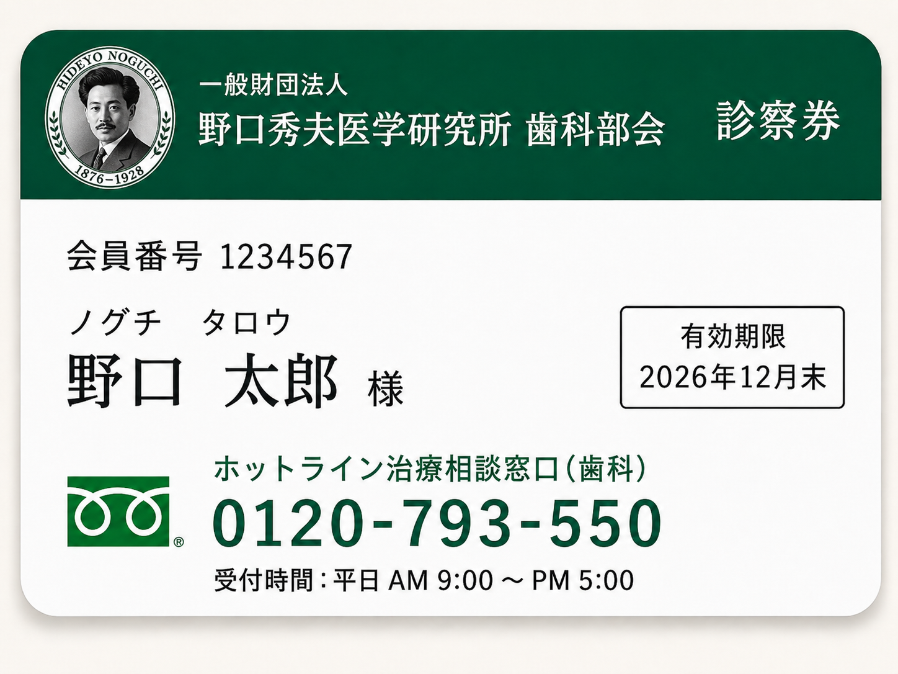
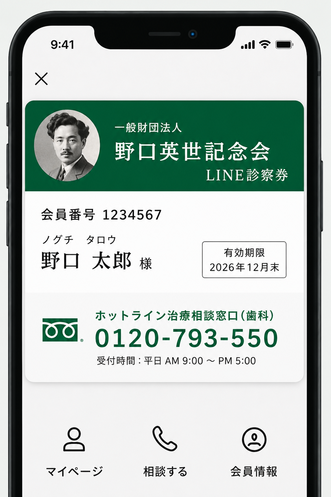

医療機関の皆様へ
LINE診察券は、今お使いの紙の診察券をそのまま置きかえて使える仕組みです。患者さんが普段使っているLINEで、次回の来院案内・予約の確認・資料のお渡し・相談窓口への問い合わせまで、ひとつにまとまります。
紙のカードと違って失くす心配がなく、患者さんの手間を減らしながら、受付スタッフの負担も軽くなります。今の紙の診察券からの切りかえも簡単で、紙とLINEを同時に使う「両方使い」にも対応できます。
当部会では、ただ仕組みを入れるだけでなく、医院ごとの診療や受付のやり方、患者さんへの説明のしかたに合わせて、運用までしっかり一緒に作ります。
診察券の発行方法
紙の診察券と、LINEで使えるデジタルの診察券、どちらにも対応しています。患者さんの好みや医院の使いやすさに合わせて、自由にお選びいただけます。
診察券の発行方法が選べるようになりました
紙の診察券とLINEで使えるデジタルの診察券、どちらにも対応しています
紙の診察券
今までと同じ、カードタイプの診察券をお作りします。

- これまでと同じ安心のカード型
- フリーダイヤルですぐ相談できる
- 財布に入れていつでも持ち歩ける
LINE診察券
LINEで使えるデジタルの診察券をお作りします。

- スマホでいつでも確認できる
- 失くす心配がない
- 画面をタップするだけで相談窓口へ
LINE診察券のいいところ
スマホひとつで使える
患者さんがいつも使っているLINEだけで完結します。新しいアプリを入れたり、会員登録をしたりする必要はありません。
失くす心配がない
紙の診察券のように忘れたり失くしたりすることがなく、作り直しの手間や費用がかかりません。
来院から相談までひとつに
次回の案内・予約の確認・資料のお渡し・相談窓口まで、すべてLINEひとつでつながり、患者さんが迷いません。
紙を減らせる
紙の使用と印刷代を抑えて、医院の運営をより楽にします。
予約フォームともつながる
LINE診察券は、予約フォームと組み合わせることで、予約から次回の来院案内までを一本の流れで使えるようになります。
LINEから予約できる
診察券の画面から、そのまま予約フォームへ進めます。患者さんがいちばん早く予約できる流れです。
予約の確認・変更
予約日時の確認や変更も、LINEのトークで完結します。電話対応の負担が減ります。
無断キャンセル対策
事前のお知らせと来院確認のお声がけで、連絡なしのキャンセル(ノーショー)を減らします。
医院にうれしいこと
受付の手間が減る
電話で確認していた内容を、LINEでまとめて自動案内できます。受付スタッフの負担がぐっと減ります。
印刷代を抑えられる
紙の診察券・案内文・はがきの印刷をぐっと減らして、運営コストを抑えられます。
連絡をひとつにまとめられる
次回案内・資料のやり取り・相談まで一つにまとまるので、対応の抜けや漏れを防げます。
もう一度来てもらいやすい
定期検診のお知らせや、再評価の案内を続けて送れるので、患者さんに「次の来院」を促せます。
当部会がサポートする内容
LINE診察券は、ただ仕組みを売って終わりではありません。医院に合わせて作るところから、使い始めた後の改善まで、当部会が一貫してお手伝いします。サポート内容は、次の3つの場面に分かれます。
① 決める：診察券の中身を一緒に決める
診察券に何を載せるか、どんなメニューにするか、予約や来院案内の流れをどうするか。医院の使い方に合わせて、最初の設計を一緒に作ります。
お渡しするもの運用の設計書 / LINEメニューの設計図
② 作る：患者さんが見る画面と文章を仕上げる
決めた設計に沿って、診察券画面のデザインと、予約・来院案内・資料送付の文章を、実際にすぐ使える形まで作り上げます。
お渡しするもの診察券画面一式 / 案内文のテンプレート集
③ 整える：院内で迷わず使えるようにする
スタッフ向けの説明、今ある電話受付や予約システムとの使い分け、患者さんへの切りかえ案内まで、現場で迷わず使えるよう運用を整えます。
お渡しするものスタッフ向け説明資料 / 患者さん向けの切りかえ案内文
※ 上記の範囲を超えるオーダーメイド機能や、医院独自のシステムとつなぐ作業などは、内容によって別途お見積りいたします。
当部会だけの強み
LINE診察券からは、当部会が運営する 歯科部会ホットライン に、画面のボタン1つでそのまま相談できます。院内では対応しきれない相談を、患者さんが安心してできるようにつなぎます。
- 治療計画書や説明資料を、専門家と一緒に読み解く相談
- 別の専門医の意見(セカンドオピニオン)を整理し、紹介につなぐ
- 大きな病院や、他の専門医療への橋渡し
導入までの流れ
- 今の受付の流れ、予約のしかた、患者さんへの説明のしかたをお伺いします
- LINE診察券で扱うこと、扱わないことを整理します
- メニューや案内文、患者さん向けの説明を作ります
- 院内のスタッフ様に共有し、お試し運用を開始します
- 本格運用の開始後も、相談内容をもとに改善を続けます
お問い合わせ
LINE診察券のご相談、運用の設計、診察券のご依頼については、下記のホットラインまでお電話ください。
- LINE診察券についてのご相談
- 診察券の作成のご依頼
- 予約フォームの設計のご相談
- 今お使いの予約システムとの組み合わせ相談